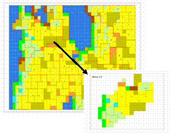

|
Mejanjeu, un jeu de rôles sur le devenir du Causse MéjanMichel Etienne (Inra), Christophe Le Page (Cirad)
Motivation de la création Le jeu a été créé à la suite d'une demande du Parc National des Cévennes de sensibiliser les populations du Causse Méjan à la "fermeture des milieux". Initialement axée sur le buis, la problématique est devenue "se mobiliser face à l'envahissement par les pins", processus identifié comme majeur suite à des simulations issues d'un modèle multi-agent. Il s'agissait de faire prendre conscience aux acteurs locaux de l'ampleur du processus écologique d'enrésinement et de faire réagir collectivement les agriculteurs, les forestiers et les agents du parc national face à cette dynamique spatiale.Description et spécificitéLe jeu de rôle repose sur une représentation d'un espace naturel suffisamment proche de la réalité pour que les joueurs y retrouvent leurs repères habituels mais suffisamment éloignée de cette réalité pour que le jeu se déroule dans un contexte neutre, sans a priori. Le jeu de rôle s'appuie sur le couplage entre un SMA simplifié et un SIG permettant une sortie rapide de représentations cartographiques thématiques à différentes échelles. Le modèle simule la dynamique des pins et des espèces végétales et animales sensibles à l'enrésinement. Les participants jouant le rôle des agriculteurs répartissent la charge animale en fonction de leur système de production et du niveau d'enrésinement de leurs parcs. Les participants jouant le rôle des naturalistes définissent les parcelles présentant les objectifs patrimoniaux prioritaires et mettent au point une stratégie de maîtrise de l'enrésinement. Les participants jouant le rôle du forestier définissent les objectifs prioritaires affectés aux massifs forestiers et proposent un plan de gestion et d'exploitation de ces massifs. A la fin de chaque tour de jeu, la négociation porte sur la technique à utiliser, la localisation de la parcelle et la main d'uvre affectée aux travaux. Une représentation cartographique de l'effet des pratiques mises en uvre par les joueurs sur la dynamique des ressources naturelles sert de support au tour de jeu suivant. Un effort particulier a été fourni pour rendre compte des effets de voisinage (position relative des agriculteurs dans la salle, isolement des agents du parc dans un coin de la salle équipé d'un ordinateur) et pour distinguer les échelles de perception de chaque acteur (l'agriculteur ne voit que son exploitation agricole, les agents du parc voient l'ensemble du territoire). Les échelles de temps ont été démultipliées (les actions d'une année sont reproduites à l'identique 5 fois) afin de projeter les joueurs suffisamment longtemps dans le futur (15 à 25 ans). Mise en oeuvreLe jeu a été utilisé 5 fois sur le Causse Méjan avec de vrais acteurs (éleveurs, techniciens forestiers, agents du PNC, techniciens de la Chambre d'Agriculture). Le jeu de rôle cherche à faire réagir des agriculteurs, des forestiers et des agents de parcs nationaux face à des dynamiques spatiales susceptibles de se produire dans un futur proche. Il repose sur une représentation d'un espace naturel suffisamment proche de la réalité pour que les joueurs y retrouvent leurs repères habituels mais suffisamment éloignée de cette réalité pour que le jeu se déroule dans un contexte neutre, sans a priori. Le jeu de rôle s'appuie sur le couplage entre un SMA simplifié et un SIG permettant une sortie rapide de représentations cartographiques thématiques à différentes échelles. Références
Pour en savoir plus, contactez l'auteur. |